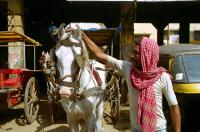
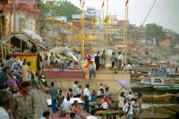

|
Samedi 7 avril
Le train est notre moyen de transport préféré. Mais cette fois-ci, quelle
horreur! Pourtant nous étions en "sleeper class", ces wagons assez bien fichus
où les dossiers se relèvent se transformant en couchettes, offrant une confortable
place pour s'allonger. Et c'est calme! En remontant sur Calcutta, je m'étais
fait remarquer parce que je traînais un peu pour éteindre la lampe qui me servait
à bouquiner pendant que Marion dormait. Il fallait dormir et un indien me l'avait
fort gentiment fait remarquer. Mais cette fois-ci donc, je ne sais pas si c'est
l'approche de Barnabé et du Gange sacré, mais ils ont lâché la rampe. A partir
de 2H00 du mat', des vendeurs ambulants sont passés dans les allées poussant
leurs cris de guerre : "COFFEEEEEEEEE", "TCHAEEEEEE", ... Deux gars qui avaient
du mal a trouver le sommeil discutaient aussi discrètement qu'on peut le faire
lorsqu'on parle dans un mégaphone. Vers 5H00, ce fut l'apothéose. Les vendeurs
se suivaient à la queue leu leu ne laissant même pas un mètre entre eux. Et
les mêmes visages passaient, passaient et repassaient encore. C'était sûr, on
ne manquerait de rien, il y avait à notre disposition: du thé, du café, des
friandises qui avaient l'air horribles, des gâteaux qui ressemblaient à de la
pâte d'amande, des pois chiches servis dans de petites coupelles tressées en
feuilles, des samosas, des omelettes sur du pain, des repas complets, des salades,
des colliers, des chaussettes, des ceintures, des journaux, des jus de mangue
avec la paille, des boissons fraîches... Et chaque fois on nous mettait l'objet
en question sous le pif... et la paille du jus de mangue... dans le pif! Des
fois qu'on n'aurait pas vu qu'ils étaient là.
Pour changer, on a encore eu un rickshaw véreux à Bénarès. "we want to go to
Darmashvadeh Ghat" "yes" "No hotel, nothing else" "OK". Quinze minutes plus
tard, après avoir essayé de nous caser dans deux hôtels où on a refusé de s'arrêter,
il nous arrêtés à... l'autre bout de la ville! On l'avait vu. On est devenu
rusés et on avait suivi le trajet sur la carte. Hé hé hé. Il nous a entraînés
dans le dédale des ruelles étroites de Bénarès au milieu des vaches pour nous
prouver que les ghats étaient tout près. Puis il nous a suivis, pistés, presque
espionnés pour se trouver une commission. "But I live here" "OK, go, we stay
here". Et il avançait de 10 mètres et on le retrouvait à chaque coin de rue
et surtout devant chaque hôtel. Lionel s'est mis en colère, cela n'a rien changé.
On a récupéré un môme de 10-12 ans qui s'est mis à nous pister "l'air de rien"
lui aussi. Finalement, une demi-heure plus tard, devant la porte de l'hôtel
familiale que nous cherchions, il nous a juré qu'il était fermé. C'est dur la
vie pour les hôtels qui ne donnent pas de commissions aux rabatteurs.
Dimanche 8 avril
Ici comme ailleurs en Inde, le bruit est terrible. Qu'est-ce qu'ils sont bruyants!
A mon avis ils finissent tous sourds. Si quelqu'un a une radio, elle est toujours
à fond pour que toute la rue en profite, du coup les hauts-parleurs grésillent
à mort, on n'entend même plus la musique, c'est épouvantable et... personne
ne dit rien. Les indiens sont supers stoïques, ils ne râlent pas, c'est normal,
chacun fait ce qui lui plait sans se soucier des autres et laisse les autres
faire ce qui leur plait. Chez nous on dit que la liberté des uns s'arrête là
ou commence celle des autres, et tout le monde rouspète contre tout le monde
(le voisin qui tond la pelouse le dimanche a l'aube, l'autre qui fait griller
des maqueraux sur son balcon, celui qui se gare devant la porte...). Ici, chacun
semble avoir une liberté infinie, et... c'est parfois épouvantable... pour nous!
Le bruit est permanent, sauf la nuit ou seul le ventilateur tourne. La rue est
un lieu épouvantable chaque seconde un klaxon nous explose les oreilles, on
finit presque par piquer des crises de nerfs. On se balade avec les mains sur
les oreilles pour se protéger, on a les oreilles bouchées, il va falloir sortir
les boules Quies si on ne veut pas devenir fous.
Lundi 9 avril
Hier soir, nous sommes allés voir les crémations. Au debut, on n'osait pas
trop s'approcher de peur de gêner la famille ou d'enfreindre le code hindou,
lorsqu'on a vu un gamin d'une douzaine d'années accroupi à un metre de l'une
des crémations en train de faire... sécher son slip devant le feu! Ce qui est
intéressant dans les crémations, ce sont les rituels observés pour la préparation
et la mise à feu. Il faut tourner x fois autour du feu, arroser le défunt d'eau
pure, de pétales de fleurs, tourner sur soi-même dans tel sens et enfin mettre
le feu à l'aide d'une torche elle-même emflammée par les "vendeurs de feu",
seuls autorisés à fournir le feu pour les crémations. Bref, c'est pas simple.
Une fois el mechoui terminé, tout est jeté au Gange, consumé ou non (selon la
quantité de bois que la famille a pu acheter) et la interviennent les orpailleurs!
Au pied des crémations! A peine les cendres sont elles remises au Gange qu'ils
les atrappent, les mettent en tas sur les berges et les passent dans leur tamis
pour attraper les bagues, boucles d'oreille, dents en or, etc. Sans complexe
ni retenue…
Moi, je ne raconterai rien sur Benares. je ne parlerai pas de ce labyrinthe
de petites ruelles ou on peut se perdre au sens figuré mais surtout au sens
propre. Je ne parlerai pas non plus des vaches si énormes qu'il est difficile
de se frayer un chemin dans les toutes petites rues ombragées, et les taureaux
si impressionnants qu'on préfère faire demi-tour plutôt que de les croiser.
Je ne parlerai pas non plus des Sadduhs, ces hommes mi-prêtres mi-mendiants,
à l'allure incroyable avec des cheveux tels des dreadlocks remontés sur la tête
et qui ne fument pas que du tabac. Je parlerai encore moins des crémations,
des enfants qui se baignent ni des dames qui lavent leur linge. Non, je ne parlerai
pas de Benas. Je suis vexé. On s'est fait crier dessus par un gars parce qu'on
a marché trop près de leur temple d'or. Parait qu'on n'est pas assez purs! Toi-même,
hé patate !
A part ça, c'est génial de se balader en barque sur le fleuve, le spectacle
est génial et parfois surprenant, comme cette occidentale qui se baignait toute
habillée à vingt mètres en aval des crémations, donc dans le Gange si sale et
en plein dans les cendres! Ou ces femmes qui lavent le linge à trente mètres
de la baignade des buffles. Il y a aussi tous les mômes qui jouent dans l'eau
partout. Les ghats s'éveillent le soir vers 17h00, apres les fortes chaleurs
(42 degrés la journée avec un petit vent chaud pour rafraîchir!) et sont actifs
aussi le matin tôt. C'est là que tout le monde sort: hommes, femmes, enfants,
saddhus, chèvres, vaches, mendiants en tous genres, masseurs, barbiers, rameurs,
vendeurs de tout et de rien et les lépreux. Ils sont tres nombreux en Inde et
c'est terrible: il leur manque des doigts, oreilles, membres...
Le soir " puja " : prière commune mise en danse et en musique (clochettes)
à Varanasi. Tout est empreint de rites comme d'ailleurs toutes leurs activités,
toute leur vie.
Suite du voyage : Le Népal
|

Inde
Varanasi
|

Inde
Varanasi
|

Inde
Varanasi
|
Inde
Varanasi
|
Inde
Varanasi
|
Inde
Varanasi
|
|
|